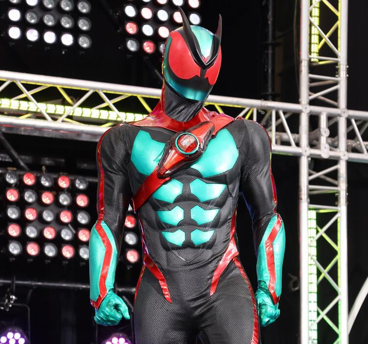
2025年から放送された「仮面ライダーゼッツ」に登場する仮面ライダー
変身者は万津莫。ゼッツドライバーとカプセムを使い変身する。
夢の中で戦うライダー。夢の中ではほぼ無敵。
基本形態はフィジカムインパクト。
身長：194.9cm 体重：80.5kg パンチ力：8.1t キック力:16.2t ジャンプ力：ひと跳び9.8m 走力：100mを7.6秒程度
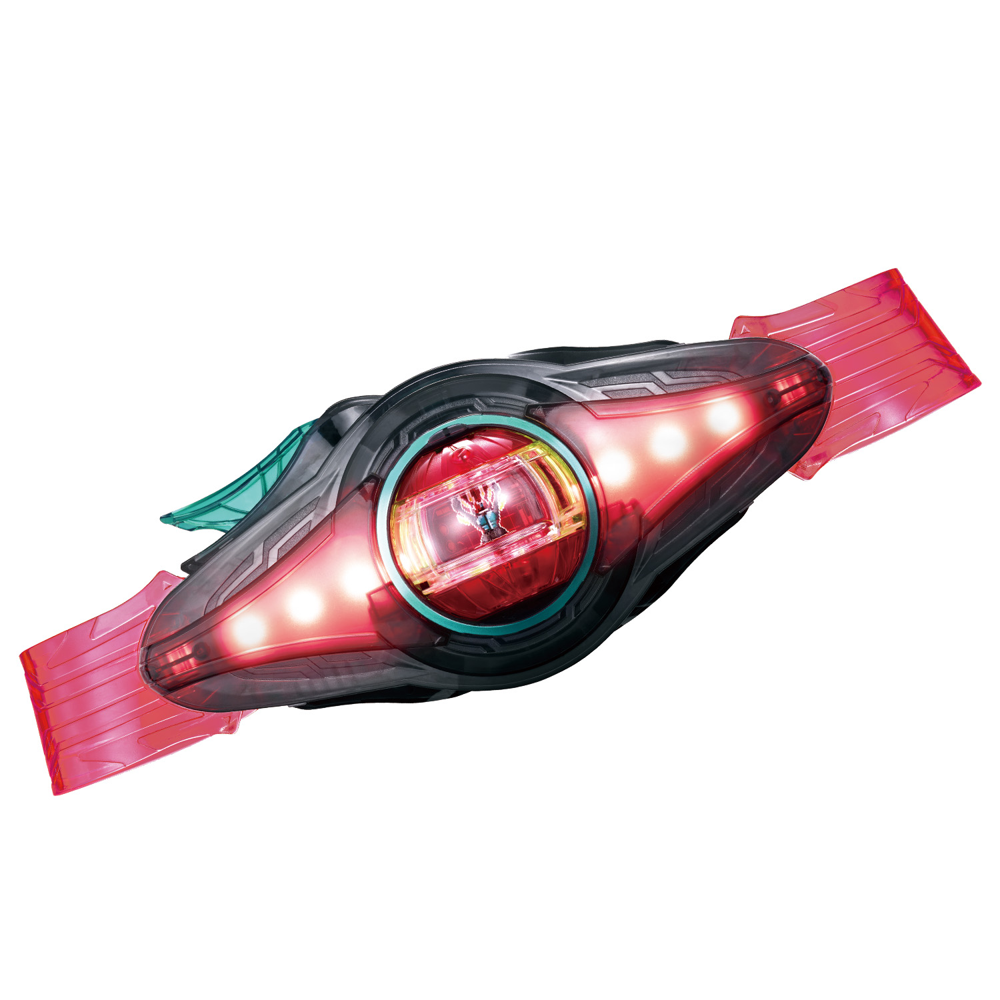
ゼッツドライバーにカプセムをセット。その後ボタンを押し、カプセムを回すことで変身する。
もう一回カプセムを回すことでそのカプセムの固有能力を使うことができる。
初めての胸に巻くタイプの変身ベルトである。たすき掛けしてるようにも見える。
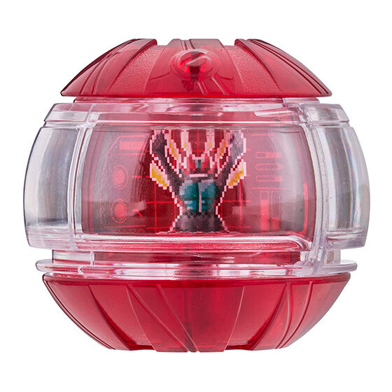
夢の力を内包したカプセル。
変身していない状態でも単品で使用し、力を開放することも可能。
中にはナイトメアという怪物の力が内包されている。
夢の中のガシャから入手でき、同じ種類のカプセムは凸上げに使用できる。
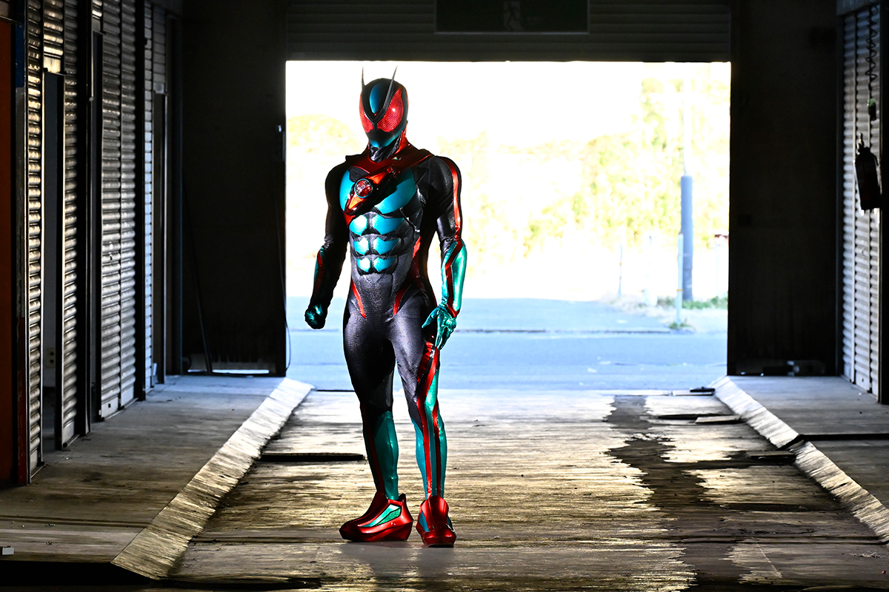
フィジカムインパクト
「インパクト」カプセムで変身
純粋に戦闘能力を強化している。
キックの衝撃波により敵を内部から破壊する。
短所がほぼない使いやすいフォーム。
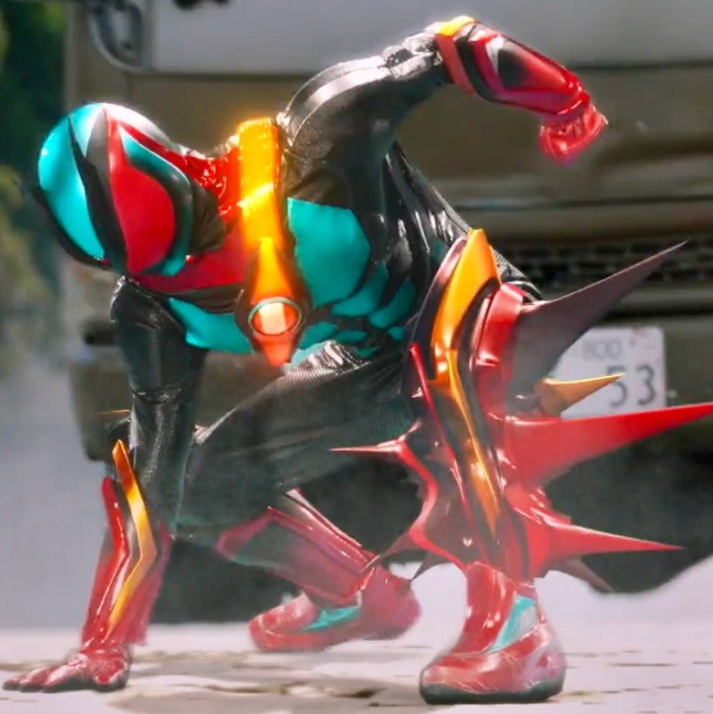
フィジカムトランスフォーム
「トランスフォーム」カプセムで変身
自身の身体を自由に変化させ、足を伸ばしたり、腕にスパイク状に変化させることができる。
単純な物理攻撃や銃弾はこの形態の前では意味をなさない。
出番が少ないフォーム
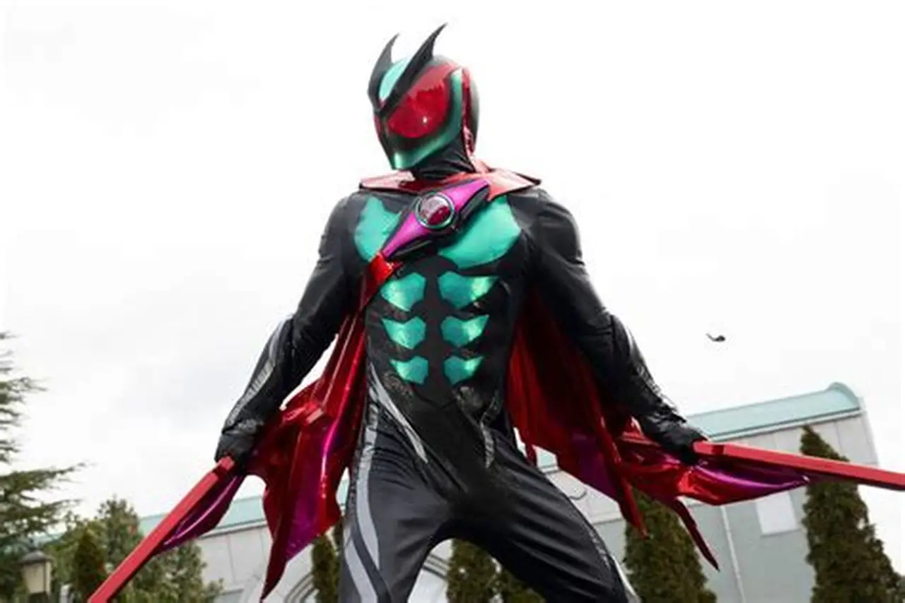
フィジカムウィング
「ウイング」カプセムで変身
背中にマント状の翼が形成され、空中を飛行可能。
翼を武器にし、敵を切り裂くことも可能。
こちらも出番が少ないフォーム
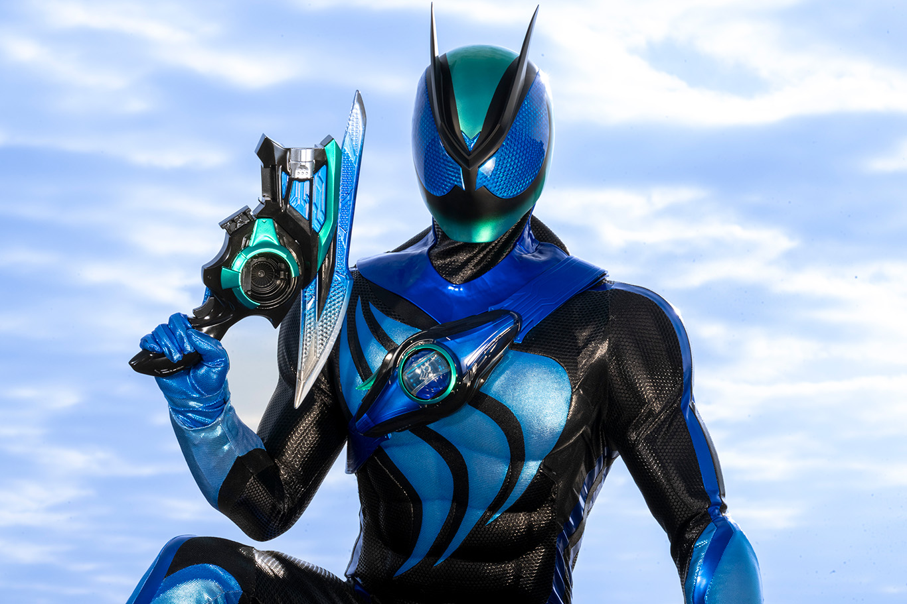
テクノロムストリーム
「ストリーム」カプセムで変身
様々な特殊技巧を扱うための神経系の適応とノウハウに長けており、
それにより、気流を操ることができる。
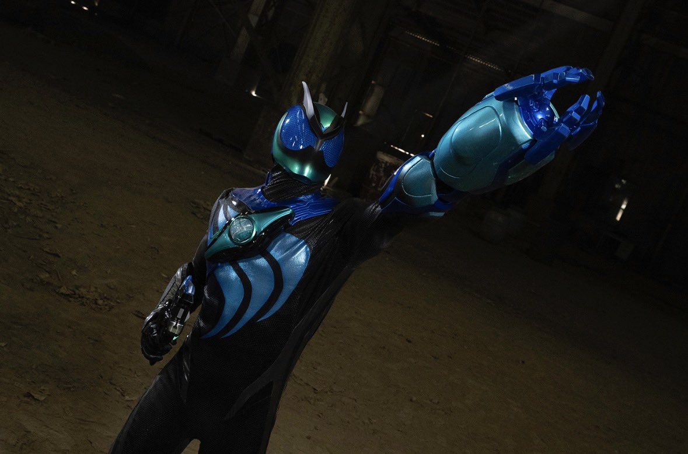
テクノロムマシーナリー
「マシーナリー」カプセムで変身
機械の分解、組み立てに長けている。
左手の追加武装はクレーンやウインチのように扱うことができる。
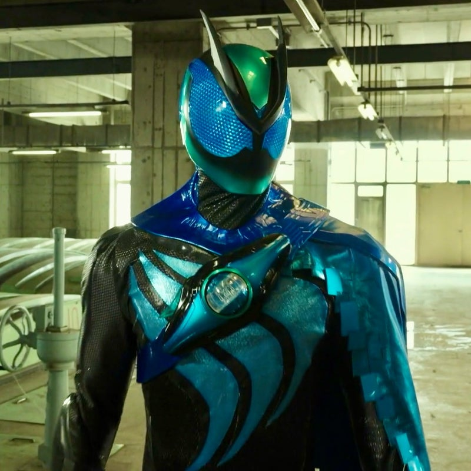
テクノロムプロジェクション
「プロジェクション」カプセムで変身
ステルス性能が高い。物体の投影などもでき、自身を投影することで、
一時的に分身が可能。
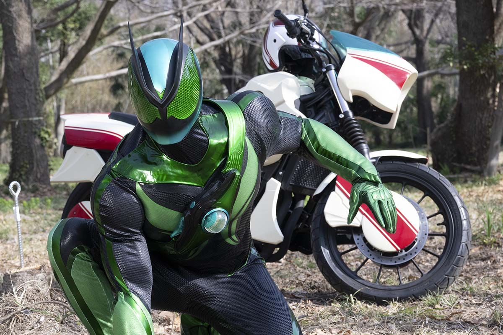
エスプリムリカバリー
「リカバリー」カプセムで変身
復元能力を持っている。
触れた対象を復元し、元の状態に戻すことができる。
いろいろと便利だから早々に敵にとられた。
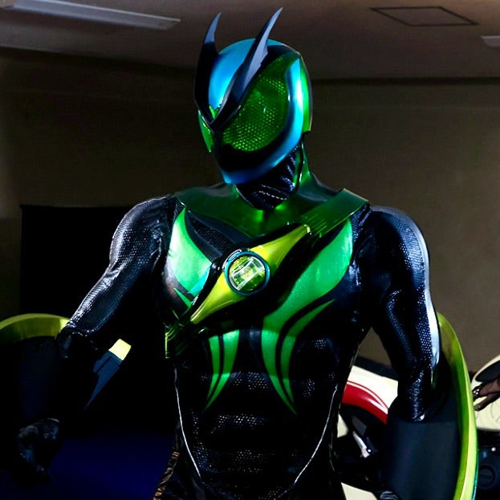
エスプリムバリア
「バリア」カプセムで変身
両腕に盾形の武装が形成され、高い防御力を発揮する。
また、両腕をあわせるとバリアフィールドを展開でき、
自身の防御のほかにも、任意の対象の保護にも使うことができる。
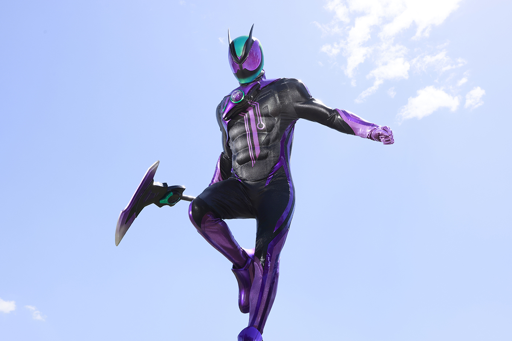
パラダイムワンダー
「ワンダー」カプセムで変身
超常的な力を操り、体を大きくしたり小さくしたりする。
その影響かスペックが全て計測不能になっている。
ウルトラマンとコラボができるかもしれない。
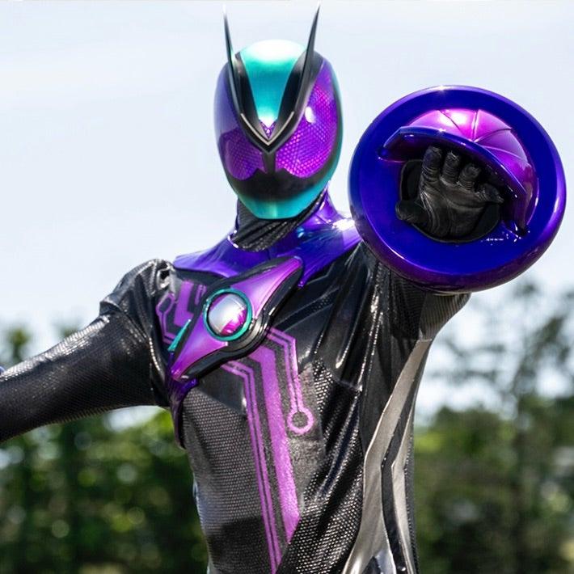
パラダイムグラビティ
「グラビティ」カプセムで変身
重力を操作できる。
反重力を利用し、大気圏外にも行くことができる。
重力を纏う一撃は星も破壊する。
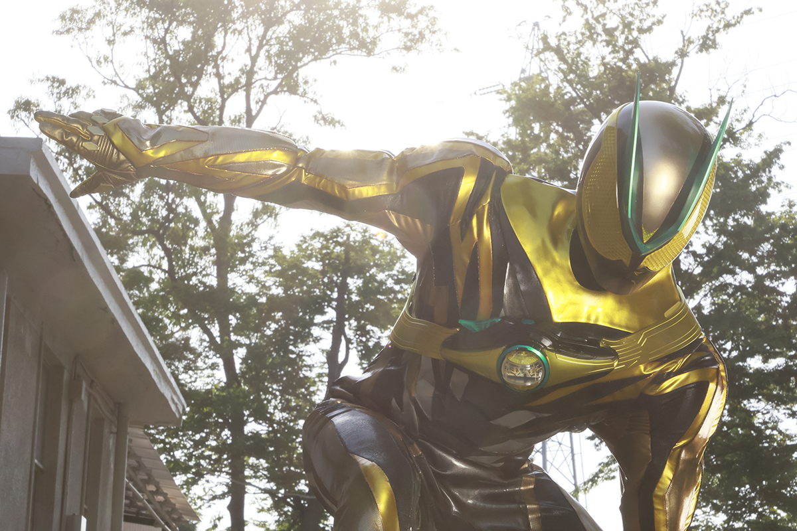
イナズマプラズマ
「プラズマ」カプセムで変身
稲妻の力により、電撃を纏う攻撃や、
瞬間的に音速を超えるスピードを引き出すことができる。
体の一部をプラズマ化させることも可能。
活動時間が極端に短いのが玉に瑕。
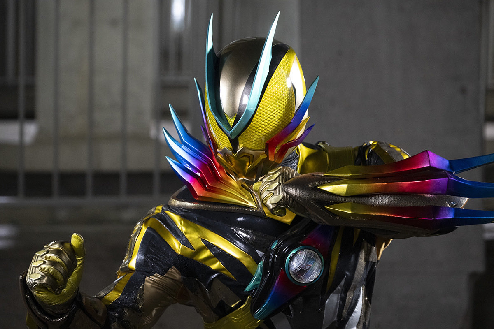
プラズマブースター
「ブースター」カプセムで変身
イナズマプラズマの強化形態であり、必殺専用形態。
ブースターの力により、活動時間を強制的に伸ばしている。
必殺の一撃は相手が痛みを自覚する前に肉体を崩壊させる。
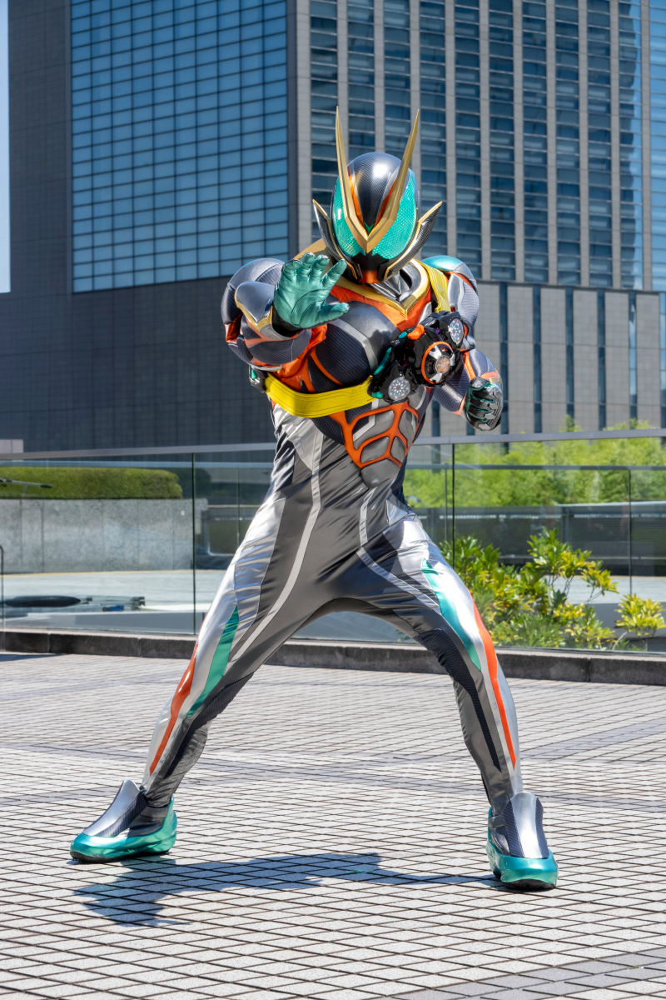
カタストロム
「デュアルメア」カプセムで変身
変身者の内に宿るナイトメアの力を引き出した姿。第一段階の形態。
破壊衝動が剝き出しになった姿であり、屈強な腕から放たれるパンチは
一発で敵はおろか、町すらも巻き添えに崩壊させる。
弱点として、破壊衝動がないと変身できず、破壊衝動が途切れたり、攻撃を躊躇してしまうと、
変身が強制的に解除されてしまう。
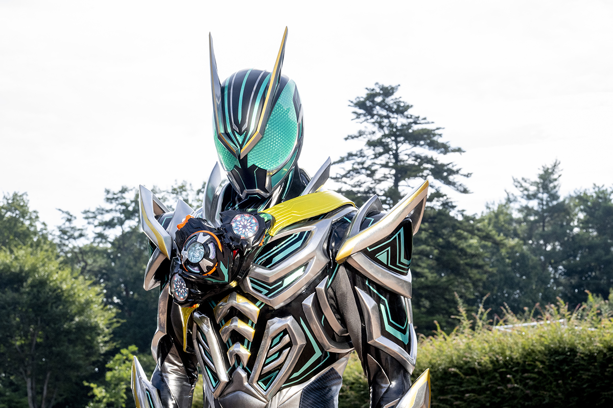
オルデルム
「デュアルメア」カプセムで変身
デュアルメアカプセムで変身できる第二段階の形態。
物体の分解、再構築を得意とし、改変された夢の成果を元に戻すことができる。
これにより、ナイトメアと一体化した夢主を救出することが可能。
カタストロムよりスペックは落ちているものの、自身に命令することで、それに最適化した身体能力を発揮できる。
夢の世界で真価を発揮する形態。
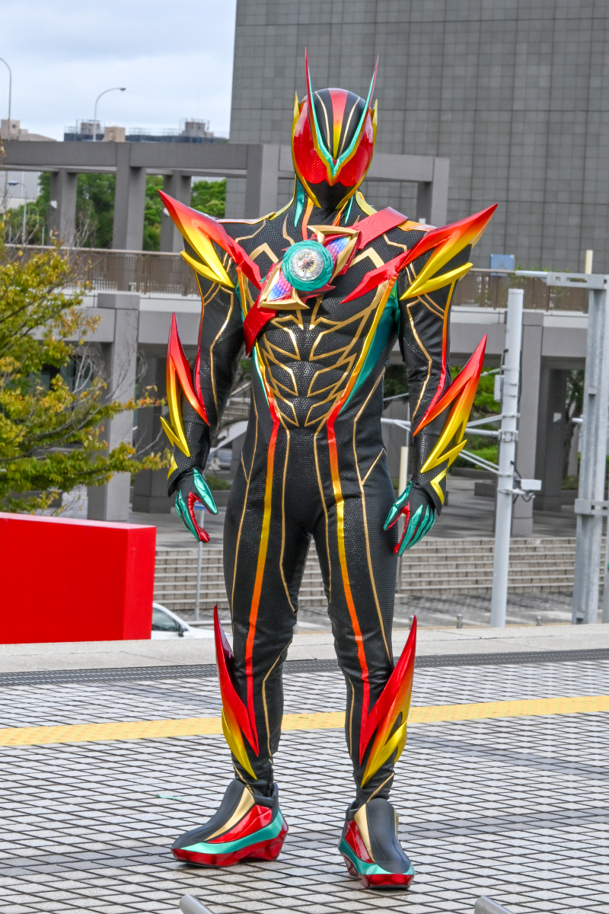
エクスドリーム
「エクスドリームライズ」カプセムで変身
エクスドリームライズカプセムで変身できる最終形態。
悪夢すら超える究極の夢の力を持っており、
夢の中では無敵の力を発揮する。
自身の夢を叶え、自身の有利に戦闘を展開できるほか、自身が倒されてしまっても、「それは夢であった」としてその事実を無効化できる。
ゴールドエクスペリエンスレクイエムのような能力を持つ形態。
仮面ライダー一覧